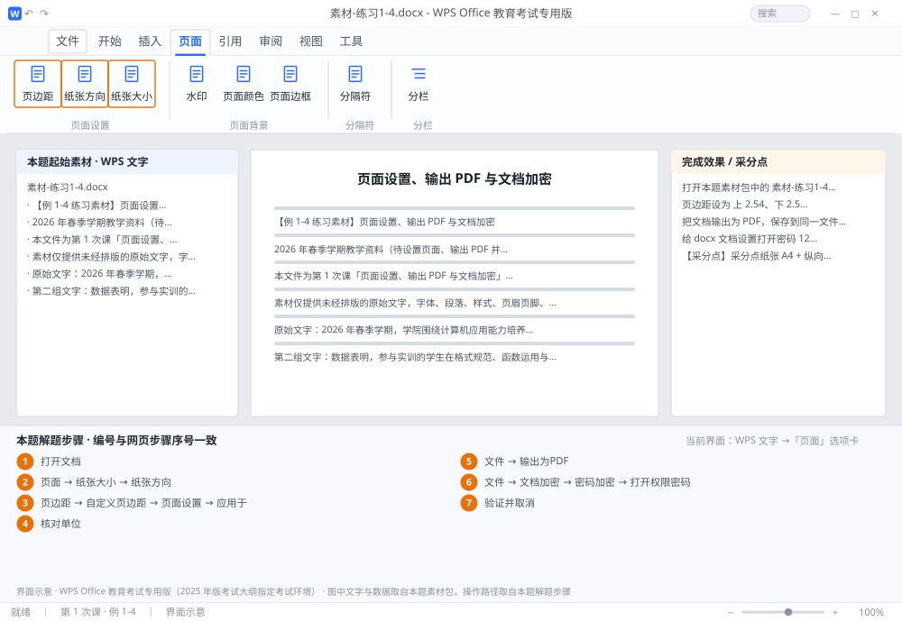

完成比对文档 · 例 1-4
页面设置、输出 PDF 与文档加密 ｜ 第 1 次课 / WPS 文字 ｜ 网页：入门实操课.html ｜ 考试环境：WPS Office 教育考试专用版（2025 年版考试大纲指定考试环境）
用途 本页按修订后的题目要求与解题步骤生成，是交卷自查的结果基准：
逐项列出每一步应出现的可复核结果，配合模拟操作截图与解题结果文件使用。
它不是素材包的一部分，不会预置答案动作；起始素材仍从本题素材包下载。
一、本题起始素材包
目录：练习素材/练习1-4-页面设置与输出/ ｜
下载包：练习素材/下载/练习1-4-页面设置与输出.zip
二、题目要求
- 打开本题素材包中的 素材-练习1-4.docx，把纸张设为 A4、纵向。
- 页边距设为 上 2.54、下 2.54、左 3.17、右 3.17 厘米，应用于整篇文档。
- 把文档输出为 PDF，保存到同一文件夹，文件名与文档同名。
- 给 docx 文档设置打开密码 123456，关闭后重新打开验证，再取消密码。
三、解题步骤（编号与下方核对表、截图编号一致）
- 打开文档。Ctrl+O → 定位 课时1 → 选 素材-练习1-4.docx → 打开。（也可直接双击文件。）
- 设纸张。「页面」选项卡→「纸张大小」→ 选 A4；「纸张方向」→ 纵向。
- 设页边距。「页边距」→「自定义页边距」→ 在弹出的「页面设置」对话框中依次填入：上 2.54、下 2.54、左 3.17、右 3.17（单位：厘米）→ 下方「应用于」选 整篇文档 → 确定。
- 核对单位。如果数字框显示的是"磅"或"字符"，先把单位下拉框改成厘米再输入，否则数值会被换算错。
- 输出 PDF。「文件」→「输出为PDF」→ 保存位置选 课时1 → 文件名保持 学号-姓名-练习1-4 → 确定/开始输出。
- 加密码。「文件」→「文档加密」→「密码加密」→ 在「打开权限密码」框输入 123456 → 确认框再输一次 → 确定 → 按 Ctrl+S 保存。
- 验证并取消。关闭文档再打开，弹出密码框即成功；输入 123456 进入后，用同一路径把密码清空 → 保存，交卷前务必取消密码。
四、完成效果 / 采分点
采分点纸张 A4 + 纵向 · 四个页边距数值全对 · "应用于"为整篇文档 · PDF 与 docx 同名同目录 · 密码设置与清除
五、逐项完成核对表
| 步骤 | 关键操作路径 | 应出现的结果（可复核） |
|---|
| 1 | 打开文档 | 素材-练习1-4.docx |
| 2 | 设纸张 | 「页面」、「纸张大小」、A4、「纸张方向」 |
| 3 | 设页边距 | 「页边距」、「自定义页边距」、「页面设置」、「应用于」 |
| 4 | 核对单位 | 核对单位 |
| 5 | 输出 PDF | 「文件」、「输出为PDF」 |
| 6 | 加密码 | 「文件」、「文档加密」、「密码加密」、「打开权限密码」 |
| 7 | 验证并取消 | 验证并取消 |
六、模拟操作截图

界面示意 · WPS Office 教育考试专用版 · 橙色编号与本题解题步骤序号一致；
图中文字与数据取自本题素材包，功能入口取自本题解题步骤。
核对方法：按网页解题步骤完成并另存自己的成稿后，逐行比对本表第 3 列的
参数、公式、区域、文件名与对象数量；再对照网页「完成效果 / 采分点」检查版式是否一致。